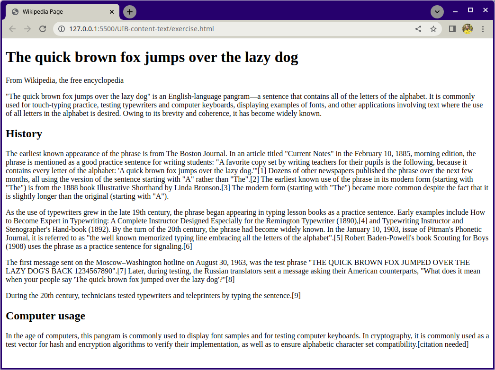

Aufgabe 1
- Erstelle eine HTML-Datei namens index.html im Stammverzeichnis des Projektordners.
- Deklariere den Dokuententype und füge das Stammelement in der Datei hinzu.
- Füge ein head- und ein body-Element in das Stammelement ein.
- Im head-Element:
- Erstelle einen Meta-Tag für den Zeichensatz UTF-8.
- Erstelle einen Meta-Tag für Author und füge deinen Namen zum Author-Tag hinzu.
- Erstelle einen Meta-Tag für Title und gib deinem Dokument einen Titel.
Lösung:
- index.html
- <!DOCTYPE html>
- <head> </head> und <body> </body>
- <meta charset="UTF-8"> <meta name="author" content="Ali"> <title>my Document</title >
Aufgabe 2
Erstelle eine Wikipedia-Website Deine Aufgabe ist es, aus einem Beispielbild eine Wikipedia-ähnliche Website zu erstellen.
- Öffne die Datei exercise.html in deinem Code-Editor und umschließe jede Textzeile mit einem passenden HTML-Tag, damit die Seite genauso wie auf dem Beispielbild unten aussieht.
Lösung:
- Öffne die Datei exercise.html in Visual studio Code.
- <h1> The quick brown fox jumps over the lazy dog </h1>
- <p> From Wikipedia, the free encyclopedia </p>
- <p> "The quick brown fox jumps over the lazy dog" is an English-language pangram—a sentence
that contains all of the letters of the alphabet. It is commonly used for touch-typing
practice, testing typewriters and computer keyboards, displaying examples of fonts, and
other applications involving text where the use of all letters in the alphabet is desired.
Owing to its brevity and coherence, it has become widely known. </p>
- <h2> History </h2>
- <p> earliest known appearance of the phrase is from The Boston Journal. In an article titled
"Current Notes" in the February 10, 1885, morning edition, the phrase is mentioned as a good
practice sentence for writing students: "A favorite copy set by writing teachers for their
pupils is the following, because it contains every letter of the alphabet: 'A quick brown
fox jumps over the lazy dog.'"[1] Dozens of other newspapers published the phrase over the
next few months, all using the version of the sentence starting with "A" rather than "The".
[2] The earliest known use of the phrase in its modern form (starting with "The") is from
the 1888 book Illustrative Shorthand by Linda Bronson.[3] The modern form (starting with
"The") became more common despite the fact that it is slightly longer than the original
(starting with "A").
As the use of typewriters grew in the late 19th century, the phrase began appearing in
typing lesson books as a practice sentence. Early examples include How to Become Expert in
Typewriting: A Complete Instructor Designed Especially for the Remington Typewriter (1890),
[4] and Typewriting Instructor and Stenographer's Hand-book (1892). By the turn of the 20th
century, the phrase had become widely known. In the January 10, 1903, issue of Pitman's
Phonetic Journal, it is referred to as "the well known memorized typing line embracing all
the letters of the alphabet".[5] Robert Baden-Powell's book Scouting for Boys (1908) uses
the phrase as a practice sentence for signaling.[6]
The first message sent on the Moscow–Washington hotline on August 30, 1963, was the test
phrase "THE QUICK BROWN FOX JUMPED OVER THE LAZY DOG'S BACK 1234567890".[7] Later, during
testing, the Russian translators sent a message asking their American counterparts, "What
does it mean when your people say 'The quick brown fox jumped over the lazy dog'?"[8]
During the 20th century, technicians tested typewriters and teleprinters by typing the
sentence.[9]
</p>
- <h2> Computer usage </h2>/li>
- <p> In the age of computers, this pangram is commonly used to display font samples and for
testing computer keyboards. In cryptography, it is commonly used as a test vector for hash
and encryption algorithms to verify their implementation, as well as to ensure alphabetic
character set compatibility.[citation needed]
<p>